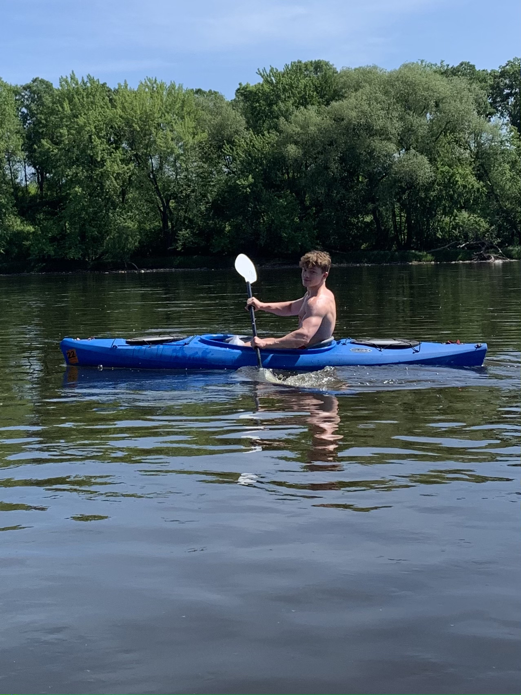

Other hobbies and activities:
- This is what I've been up to outside of my schoolwork:
-
Despite being busy and having limited personal time, I have tried to maintain my hobbies as well as possible. I've been an avid gym-goer for a several years now, but within the past year, I have also taken up powerlifting. It is a slow and gradual process, but I am enjoying it.

-
Being active and spending time in nature is very important to me. When the weather is nice, I like to spend time outside and try new activities. However, during the winter season, I tend to stay indoors and have been playing basketball to stay active.
 -
A hobby I am currently trying to cultivate is drawing. It is something I used to do much more often, but it can be hard to find the time. I think it is important to have a hobby that lets you express yourself creatively. It can be challenging and frusterating at times, but immensely rewarding as well.